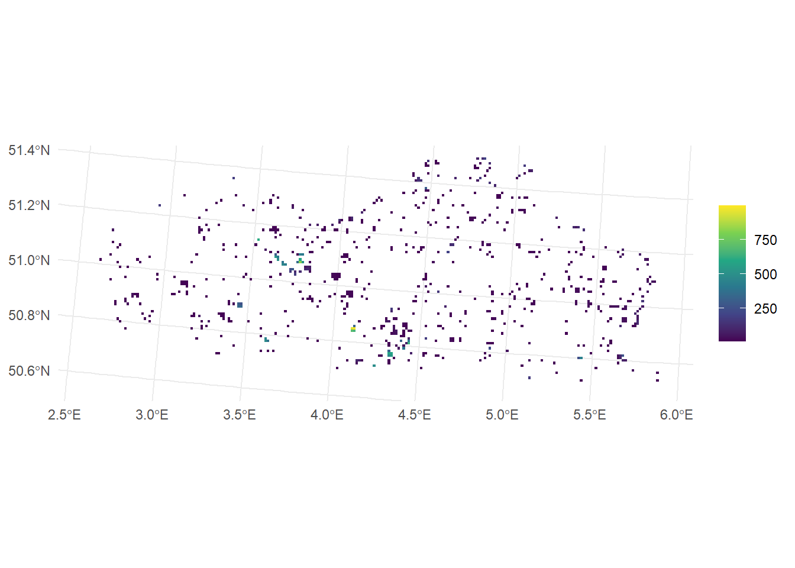
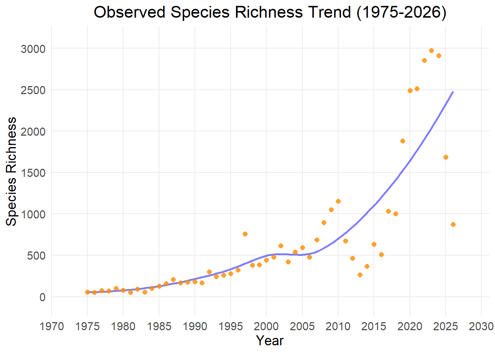
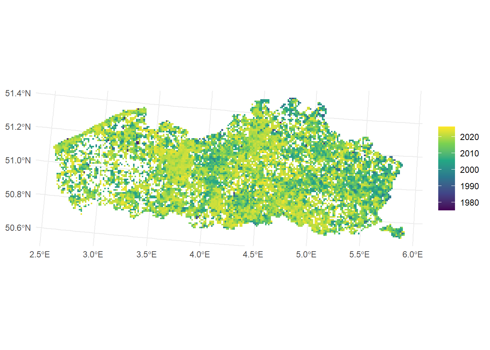
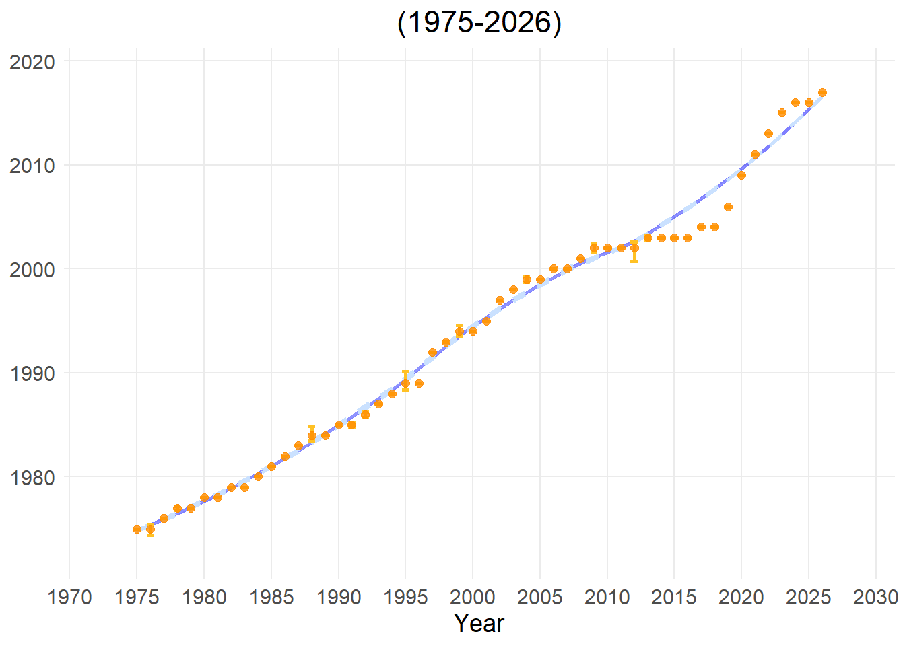

Observed species richness represents the total number of unique species discovered and recorded within a given geographic area or specific year:
High value: A high number of unique species, indicating a diverse local community.
Low value: A low numbere of unique species, signaling a species-poor habitat or an area which has been rarely surveyed.
Applicability for policy
This metric is a necessary for determining biodiversity hotspots and tracing potential declines in species richness across specific taxonomic groups. It provides the initial baseline data needed to justify local protection zones, evaluate regional habitat health, and track broad, long-term shifts in community composition over the years.
Limitations
Observed species richness is highly sensitive to sampling bias and human observation effort. If certain grid cells are studied more carefully or visited more frequently by volunteers than others, they will artificially appear to have more species. Furthermore, results are skewed by species detectability. Rare or widely dispersed species are easily missed during casual surveys, whereas highly conspicuous or easy-to-find species will often be reported.
The map below displays observed species richness in Flanders, but only where completeness is larger than 0.5. The regions which are not displayed, are undersampled.


TipTotal Occurrences
Indicator type
Data quality indicator.
Explanation
This metric represents the total number of occurrences (independent of species) within a specific grid cell or year.
High value: This usually signalsa hotspot for human outdoor activity or nature reporting.
Low value: Very few or zero records have been submitted, potentially indicating a data “blind spot.”
Applicability for policy
This metric serves two important administrative functions. First, it measures citizen science engagement. Second, it helps to interpret other metrics more correctly as it highlights biases in survey effort over time and space.
Limitations
It primarily maps where people like to walk, near roads and towns, rather than actual conservation value.
This indicator measures rarity based on the total number of records within the dataset by summing the abundance-based rarity values of all species present in a grid cell or year.
A high indicator value means the grid cell contains many species that are locally scarce or have very low population numbers.
A low value indicates that the grid cell is dominated by a few species that are highly common and frequently recorded.
Applicability for policy
This metric is highly valuable for conservation prioritization because it highlights specific geographic areas that harbor disproportionately high numbers of locally scarce species. This provides a strong scientific justification for establishing targeted local protection zones. Furthermore, shifts in rarety can results from changes in community composition and can serve as an early warning signal.
Limitations
The primary limitation is its extreme sensitivity to sampling bias and the absolute volume of total occurrences in the data cube. For instance, a common species that is under-reported will artificially increase rarety. Instead, a single rare but highly charismatic species that is often recorded by wildlife enthusiasts will falsely cause the abundance-based rarity score to drop.
This indicator measures rarity based on geographic distribution across the entire study area. It sums the occupancy-based rarity values of all species present in a grid cell or year.
A high indicator value demonstrates that the grid cell contains many species that have a highly restricted geographic range.
A low value reveals that the grid cell contains only widespread species that can easily be found at other locations.
Applicability for policy
This metric is critical for spatial planning and the design of protected area networks? For instance, it highlights irreplaceable grid cells containing range-restricted species that cannot be compensated for by protecting other locations (in case of Natura2000 area). Additionally, it helps identify unique ecological niches, vulnerable ecosystems, or highly fragmented habitats that host geographically isolated species at high risk of regional extinction.
Limitations
The outcome is strongly depending on survey effort. Moreover, another limitation is that the score is strictly dependent on the chosen spatial scale and grid cell size of the analyzed data cube. A species might appear highly rare and range-restricted simply because it only occurs in one cell within your specific project borders, even though it might be widely distributed just outside the artificial boundaries of the analyzed cube.
This indicator measures the overall health, balance, and variety of nature by shifting the analytical focus along a smooth mathematical gradient using three standard values—Hill-0, Hill-1, and Hill-2. This gradient allows policymakers to see exactly how balanced an ecosystem’s community structure is:
Hill-0: the effective number of species (species richness). This measure reveals how many species are present.
Hill-1: the effective number of typical species, balancing rare and common species. This measure indicates how evenly biodiversity is distributed across species.
Hill-2: the effective number of dominant species, emphasizing common species. This indicator reveals whether biodiversity is dominated by a few common species.
Large differences between the three values indicate that biodiversity is concentrated in a small number of dominant species, whereas similar values indicate a more even and balanced community.
Applicability for policy
Comparing Hill-0, Hill-1, and Hill-2 provides insight into both species richness and community structure.
An example illustrating how the scores can be combined to provide an accurate picture of ecosystem composition:
The Scenario: A policymaker compares two forests, Forest A and Forest B. Both forests have a total count of ten species, meaning they score equally high on Hill-0.
Forest A (Healthy Balance): Contains exactly one hundred trees per species. Because of this perfect distribution, its Hill-1 and Hill-2 values remain very high, signaling a highly resilient habitat.
Forest B (Degraded Monoculture): Contains one thousand trees of a single invasive plant and only one individual tree for each of the other nine species. In this case, its Hill-1 score will plummet and its Hill-2 score will hit an extremely low level.
Limitations
The raw numbers generated along this entire gradient are highly vulnerable to uneven sampling efforts and data collection biases within the GBIF data cube.
While standard Species Richness simply represents the total number of species found in a single year, Cumulative Richness keeps a running total over time. Every time a new, unique species is observed that has never been recorded in previous years within that grid cell, it is added to a cumulative sum.
High or fast-rising value: Each year, many “new” species are still being discovered for the first time in that region. While this could theoretically mean an influx of new climate-migrants or invasive alien species, in most cases it simply means the historical dataset is incomplete and we are still catching up on mapping what is actually there.
Low or flattening value: The curve is flattening out, meaning almost no new species are being added to the historical list anymore. This indicates that the dataset for this region has become highly comprehensive and mature.
Applicability for policy:
Data Completeness Check: If the cumulative richness line is steep and rising fast, it warns the government that the current data is an underestimate and too incomplete to base hard policy decisions on.
Tracking New Arrivals: In highly monitored regions where data is already complete, a sudden new bump in cumulative richness can serve as a leading indicator for the arrival of invasive alien species or climate-driven species shifts.
Limitations
This metric is poorly suited to measuring rapid, negative biodiversity changes or current habitat degradation. Because it is a cumulative sum, the value never decreases. If a local extinction occurs or if common species crash in numbers, cumulative richness will completely ignore it and remain at its historic maximum.
This indicator calculates the average (mean) year of all nature records within a specific grid cell, providing a quick look at how recent or historical the data in that cell is.
High value (recent mean year): The vast majority of the data in the grid cell was collected very recently. This is often driven by citizen science data from people using smartphones and apps over the last few years.
Low value (older mean year): This indicates that a large portion of the dataset consists of older museum collections, historical surveys, or long-running monitoring programs from previous decades.
Applicability for policy
Data Freshness Check: It serves as a vital metadata check for policymakers to ensure they are not basing current conservation laws on outdated information. If a grid cell has a very low mean year, this indicates that the area needs urgent re-surveying.
Monitoring history: It helps environmental agencies map out how data collection methods have evolved across different provinces.
Limitations
A recent mean year does not infer high data quality. A region with a low (older) mean year might actually have a much higher data quality because it has been conducting flawless, highly comprehensive, and structured professional monitoring for forty years.
Show the code
#load librarylibrary(b3gbi)#Execute preprocessing stepNN_map <-newness_map(Angiosperm_data_cube,cell_size="grid")#TODO;check dat NA buiten Vlaanderen resultaat niet beïnvloedt?NN_ts <-newness_ts(Angiosperm_data_cube, cell_size="grid")plot_map(NN_map,visible_gridlines =FALSE)plot_ts(NN_ts)


TipOccurrence Density
Indicator type
Data quality indicator.
Explanation:
This metric calculates the total number of biodiversity occurrences divided by the surface area, specifically summing the number of records per square kilometer for each grid cell or year.
High value: The grid cell contains a high concentration of occurrences.
Low value: The records are sparse and thinly spread out over a large geographic area.
Applicability for policy:
Allowing comparison of survey effort: This is a vital baseline tool for regional planning because it allows to fairly compare human observation activity
Estimating citizen science engagement: It helps governments evaluate the true density of citizen science engagement.
Limitations:
Just like Total Occurrences, this metric is ecologically meaningless when looked at in isolation. It primarily reflects localized human search effort (like a popular walking path or a nature center) rather than the actual conservation value of the environment.
This indicator measures how the species composition within a specific area shifts over time, tracking the exact rate at which species appear or disappear between two periods. Using the Jaccard dissimilarity index, the system compares the historical list of species against the modern list and scores the turnover on a scale from 0 to 1:
High value (closer to 1): The area is experiencing rapid and community restructuring. Old species are disappearing and entirely new species are taking their place, meaning the two time periods look completely different from each other.
Low value (closer to 0): The ecosystem is highly stable and static. The exact same species that lived in the area years ago are still present today.
Applicability for policy:
Ecosystem stability & Stress Testing: This is a vital tool for assessing how ecosystems respond to large-scale pressures like climate change, habitat fragmentation, or nitrogen deposition.
Evaluating management success: It allows governments to see if nature restoration policies are actually working. For example, if a province creates a new wetland, a controlled increase in turnover proves that the targeted wetland species are successfully moving in.
Invasive species tracking: High turnover can serve as a red flag for biological invasions, warning conservation boards that native species are potentially being replaced by incoming alien species.
Limitations
The metric shows that change is happening, but it cannot tell you why or whether the change is ecologically good or bad. A high turnover score could mean a heavily degraded forest is being invaded by invasive weeds, or it could mean a barren piece of land is successfully transforming into a rich wildflower meadow. It must always be combined with rarity or taxonomic indices to understand the true nature of the shift.
This indicator estimates how complete our knowledge of an ecological community is by calculating “Sample Coverage” (a concept originally developed by Turing and Good, and popularized by Chao and Jost). Instead of just counting the raw number of observations, it calculates the proportion of all individuals in the actual community that belong to the species we have already detected in our sample:
High value (Value of 1.0 or 100%): The sample is perfectly complete. This indicates that all species living in that area have been successfully found and recorded, meaning no new species are expected to be uncovered through further fieldwork or searching.
Low value (Value of 0.2 or 20%, for example): The sample is incomplete. This suggests that while you have found some species, an estimated 80% of the remaining individuals in that community belong to species that have not yet been detected or logged in the database.
Applicability for policy
An important indicator of data quality: This indicator is an absolute prerequisite for reliable, data-driven policymaking. If completeness is high, it ensurs that any differences are real ecological trends rather than just reflections of uneven sampling sizes.
Tracing “blind spots”: This indicator allows environmental agencies to identify gaps in data coverage. A low completeness score in a given region signals the need for increased monitoring efforts.
Limitations
Completeness is a statistical correction tool calculated behind the scenes via the iNEXT package. It measures the reliability and maturity of the dataset, not the actual nature quality of the habitat.
This indicator measures local biodiversity by dividing the total number of unique species by the surface area, specifically calculating the number of unique species found per square kilometer for each grid cell or year.
High value: The grid cell contains a high concentration of unique species.
Low value: The area contains a low concentraion of unique species.
Applicability for policy:
Allowing comparison across scales: Cubes with different grid sizes can easily be compared.
Identifying hotspots of biodiversity.
Limitations
It is largely affected by biases in survey effort.